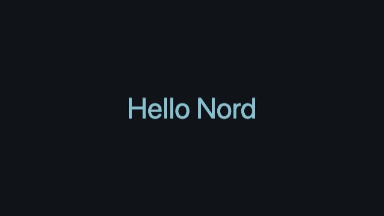

Tutorials / Nord Engine
T01 Hello Nord
You will: create a 2D project, put text on screen, run it. Runnable project: nord new hello -t 2d.
- Create the project: hub → New → 2D game (or
nord new hello -t 2d). - Open the project’s main scene (
scenes/main.scene.json). Its entities appear in Hierarchy. Click the Add entity (+) button, name itTitle, and set position to[320, 180, 0](the middle of a 640×360 screen). - In the Inspector press + Add component → text and set
text=Hello Nord,size=48,color=#88c0d0. - Press ▶ Play (Cmd+R). You see the words on the project's background colour.
- Change the text while the game runs — the Game tab updates when you save the scene.

Success check: the Game view shows Hello Nord in large letters. If it does not, confirm the text component is on Title and that the display is 640×360; otherwise use the centre of your project’s display.
This is the entity entry inside the scene’s entities array. It is not an entire scene file:
{ "id": "k3j9x0a1", "name": "Title", "transform": { "pos": [320, 180, 0] },
"components": [ { "type": "text", "text": "Hello Nord", "size": 48, "color": "#88c0d0" } ] }Next: T02 Sprite & movement.